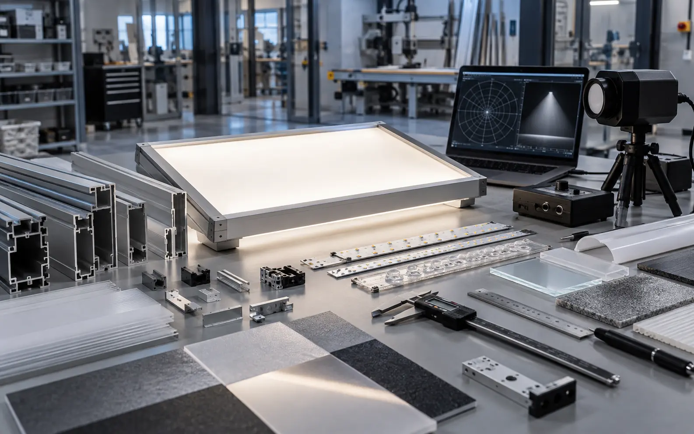
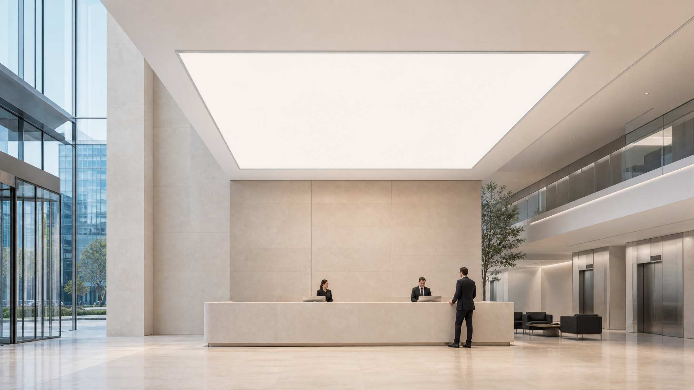
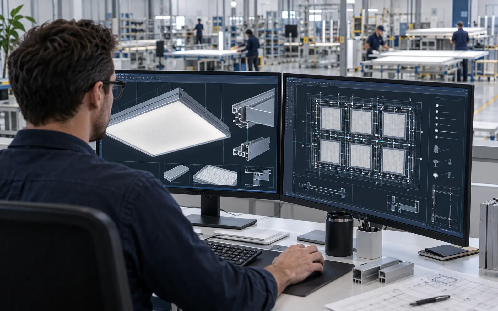
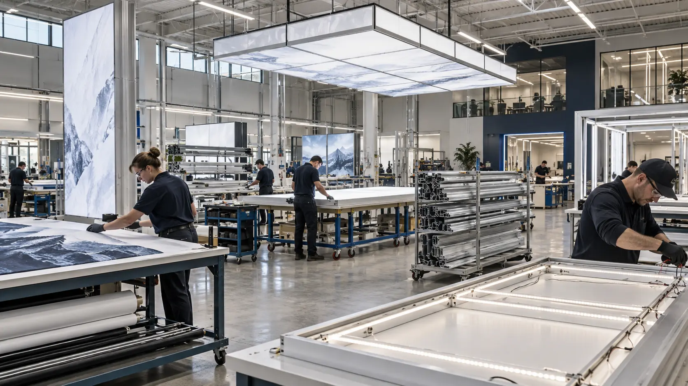
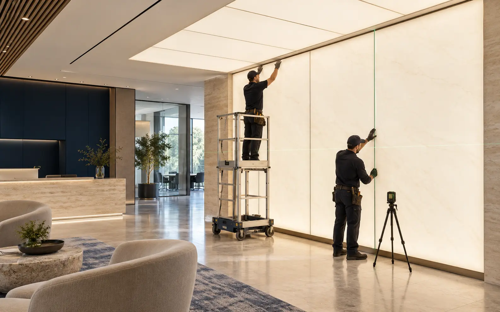

Discover
Understand the project.
We review the brief, drawings, application, site conditions and project requirements.
Typical work:Scope review, Priorities, Initial requirements.Baganti coordinates project review, design development, engineering, production and delivery. On-site installation is available as a separately quoted, optional service. Scope and schedule are confirmed for each project.


We review the brief, drawings, application, site conditions and project requirements.
Typical work:Scope review, Priorities, Initial requirements.
We develop the design and select materials, product options and production methods.
Typical work:Concept development, Material and system selection, Preliminary costing.We confirm lighting, structure, materials, controls and performance requirements before production.
Typical work:Technical drawings, Specifications, Samples and prototypes when required.
We coordinate printing, fabrication, lighting assembly, finishing and quality checks in-house.
Typical work:Production, Assembly, Quality validation.
We pack the finished system and coordinate delivery, installation information and technical support.
Typical work:Delivery planning, Installation support, Final documentation.
On-site installation is an optional, separately quoted service. A Baganti installer can coordinate with the project team. Availability and scope are confirmed for the project.
Typical work:Quoted installation service, On-site Baganti installer, Final coordination and handoff.A complete specification is not required to begin. Share your drawings, references, application and requirements. We’ll identify the product options and technical details to confirm.